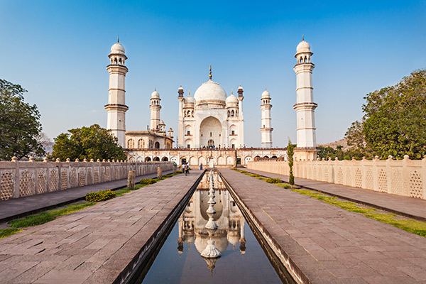
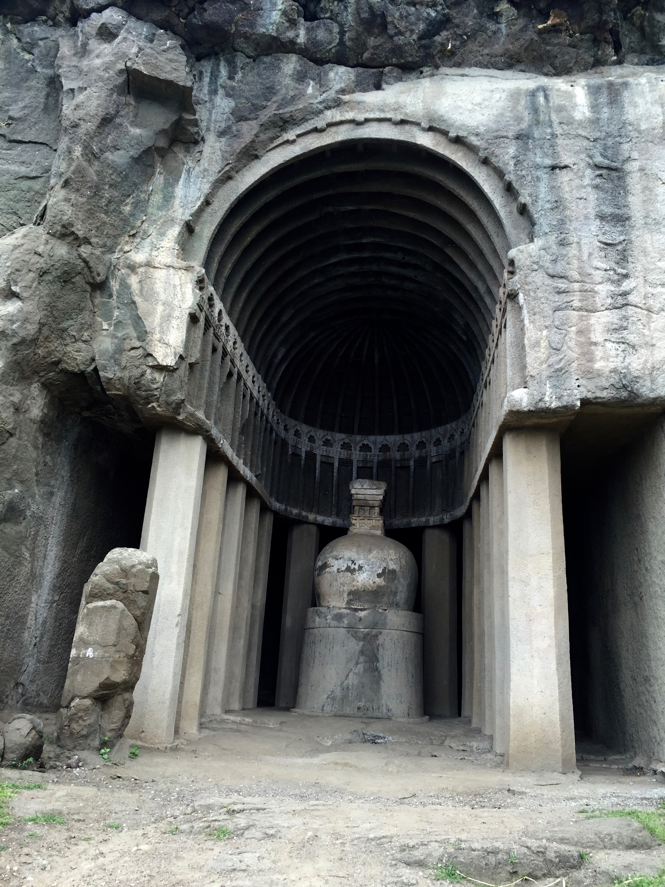
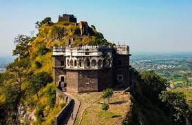
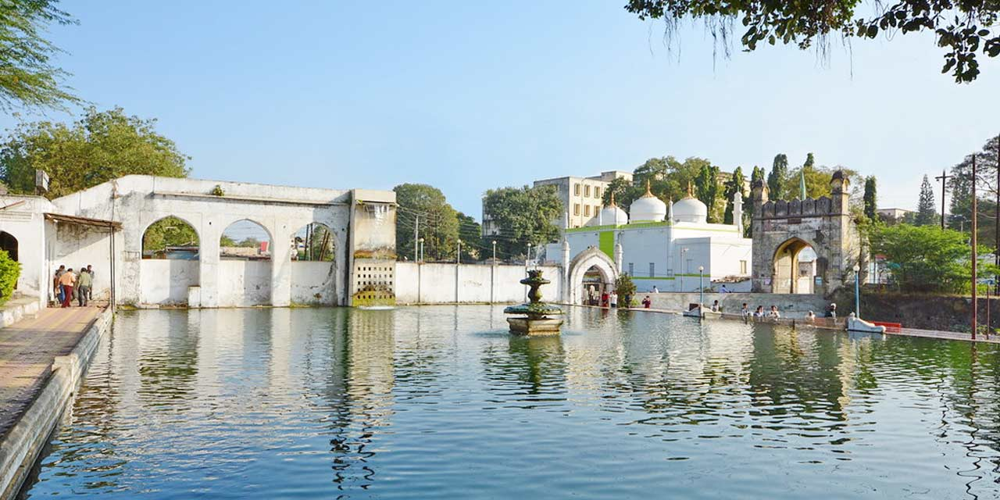
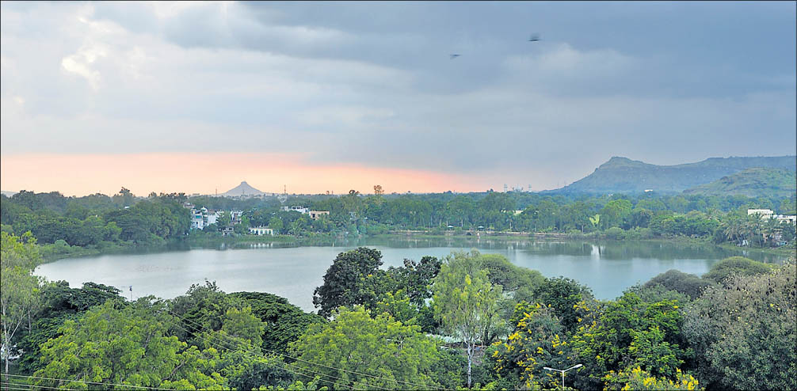
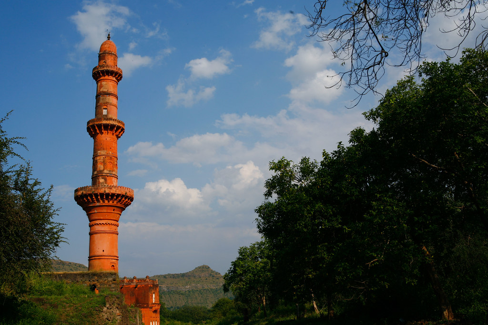
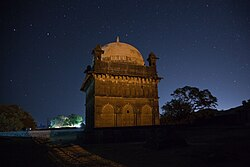

Bibi Ka Maqbara: The Mini Taj Mahal
Bibi Ka Maqbara is a beautiful mausoleum built in the 17th century, often referred to as the 'Mini Taj Mahal'. It was constructed by Aurangzeb in memory of his wife, Dilras Banu Begum.
Fun Fact:
~It is the only monument in India that resembles the Taj Mahal!
Things to Explore at Bibi Ka Maqbara:
-
The Architecture:
Admire the stunning Mughal architecture and intricate carvings.
-
The Gardens:
Stroll through the beautifully landscaped gardens surrounding the mausoleum.
-
The History:
Learn about the historical significance and stories associated with the monument.
-
The Photography:
Capture stunning photographs of the monument against the backdrop of the sky.
-
The Cultural Experience:
Engage with local artisans and explore nearby markets.
Why Visit Bibi Ka Maqbara?
!Because it’s not just a monument, but a symbol of love and architectural brilliance that deserves to be explored!

Aurangabad Caves: The Hidden Gems
Aurangabad Caves are a group of rock-cut Buddhist caves dating back to the 2nd century. They are lesser-known but equally fascinating as the Ajanta and Ellora Caves.
Fun Fact:
~These caves are known for their unique sculptures and intricate carvings!
Things to Explore at Aurangabad Caves:
-
The Sculptures:
Marvel at the intricate carvings depicting Buddhist themes and stories.
-
The Architecture:
Explore the unique architectural styles of the caves.
-
The Serenity:
Enjoy the peaceful ambiance away from the crowds.
-
The Scenic Views:
Take in the beautiful views of the surrounding hills and valleys.
-
The Historical Significance:
Learn about the history and cultural importance of these caves.
Why Visit Aurangabad Caves?
!Because it’s not just a hidden gem, but a treasure trove of ancient art and culture waiting to be discovered!

Daulatabad Fort: The Invincible Stronghold
Daulatabad Fort is a historic fort located on a hilltop, offering panoramic views of the surrounding landscape. It was once the capital of the Deccan Sultanate and is known for its impressive architecture.
Fun Fact:
~The fort was originally named 'Deogiri' and was one of the most formidable forts in India!
Things to Explore at Daulatabad Fort:
-
The Architecture:
Admire the unique architectural features and defensive structures of the fort.
-
The History:
Learn about the historical significance and stories associated with the fort.
-
The Scenic Views:
Enjoy breathtaking views of the surrounding hills and valleys.
-
The Caves:
Explore the ancient caves carved into the rock faces.
-
The Cultural Experience:
Engage with local artisans and explore nearby markets.
Why Visit Daulatabad Fort?
!Because it’s not just a fort, but a journey through history that offers a glimpse into the past!

Panchakki: The Water Mill
Panchakki is a historic water mill built in the 17th century, known for its unique engineering and historical significance. It was used to grind grain for the local community.
Fun Fact:
~The water mill is powered by a nearby spring, showcasing ancient engineering techniques!
Things to Explore at Panchakki:
-
The Water Mill:
Witness the ancient water mill in action and learn about its historical significance.
-
The Gardens:
Stroll through the beautifully landscaped gardens surrounding the mill.
-
The History:
Learn about the historical importance and stories associated with Panchakki.
-
The Photography:
Capture stunning photographs of the mill against the backdrop of the sky.
-
The Cultural Experience:
Engage with local artisans and explore nearby markets.
Why Visit Panchakki?
!Because it’s not just a water mill, but a glimpse into ancient engineering and community life that deserves to be explored!

Salim Ali Lake: The Birdwatcher's Paradise
Salim Ali Lake is a serene lake located on the outskirts of Aurangabad, named after the famous ornithologist Salim Ali. It is a haven for birdwatchers and nature lovers.
Fun Fact:
~The lake is home to a variety of migratory birds, making it a popular spot for birdwatching!
Things to Explore at Salim Ali Lake:
-
The Birdwatching:
Observe a wide variety of migratory birds and local wildlife.
-
The Scenic Views:
Enjoy the beautiful views of the lake and surrounding hills.
-
The Nature Trails:
Explore the walking trails around the lake and immerse yourself in nature.
-
The Photography:
Capture stunning photographs of the lake and its avian inhabitants.
-
The Peaceful Ambiance:
Relax and unwind in the tranquil surroundings of the lake.
Why Visit Salim Ali Lake?
!Because it’s not just a lake, but a sanctuary for nature lovers and birdwatchers that offers a peaceful escape from the city!

Chand Minar: The Tower of Light
Chand Minar is a historic tower built in the 14th century, known for its unique architecture and historical significance. It is one of the tallest towers in India and offers panoramic views of the surrounding area.
Fun Fact:
~The tower was built to commemorate the victory of Ala-ud-Din Bahmani over the Deccan Sultanate!
Things to Explore at Chand Minar:
-
The Architecture:
Admire the unique architectural features and intricate carvings of the tower.
-
The Views:
Enjoy breathtaking views of the surrounding landscape from the top of the tower.
-
The History:
Learn about the historical significance and stories associated with Chand Minar.
-
The Photography:
Capture stunning photographs of the tower against the backdrop of the sky.
-
The Cultural Experience:
Engage with local artisans and explore nearby markets.
Why Visit Chand Minar?
!Because it’s not just a tower, but a symbol of victory and architectural brilliance that deserves to be explored!

Khuldabad: The City of Saints
Khuldabad is a historic town known for its rich cultural heritage and historical significance. It is home to several important monuments and is often referred to as the 'City of Saints'.
Fun Fact:
~The town is known for its unique blend of Hindu and Islamic architecture!
Things to Explore at Khuldabad:
-
The Monuments:
Visit the historic monuments and tombs of saints and rulers.
-
The Architecture:
Admire the unique architectural styles that reflect the town's rich history.
-
The Scenic Views:
Enjoy beautiful views of the surrounding hills and valleys.
-
The Cultural Experience:
Engage with local artisans and explore nearby markets.
-
The Spiritual Atmosphere:
Experience the serene ambiance that has attracted pilgrims for centuries.
Why Visit Khuldabad?
!Because it’s not just a town, but a journey through history that connects you with ancient civilizations!